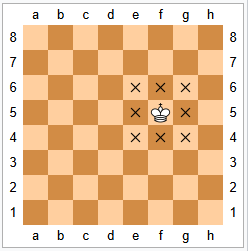
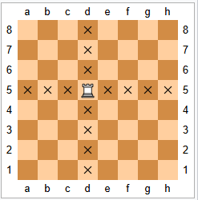
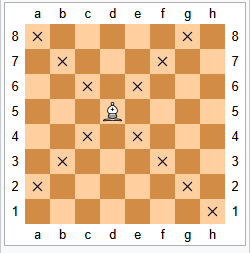
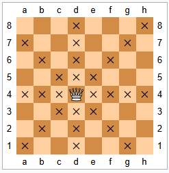
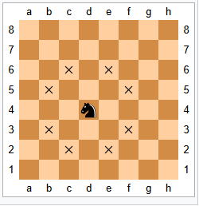
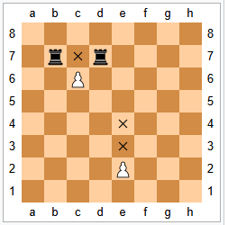

Król może ruszać się o jedno pole w poziomie, pionie lub na ukos. Najwyżej raz w grze każdy z króli może wykonać specjalny ruch zwany roszadą.

Wieża porusza się o dowolną liczbę wolnych pól w poziomie i pionie; porusza się ona również podczas roszady.

Goniec może ruszać się o dowolną liczbę wolnych pól po przekątnych.

Hetman porusza się o dowolną liczbę wolnych pól w poziomie, pionie i na ukos (łączy w ten sposób w sobie ruchy wieży i gońca).

Skoczek rusza się na najbliższe pole nie znajdujące się w tym samym rzędzie, kolumnie lub przekątnej; innymi słowy poruszają się one o dwa pola na kształt wieży, a następnie jedno pole prostopadle do tego kierunku. Ruch skoczka nie jest blokowany przez inne bierki, tzn. „skacze” on na nowe pole. Ruchy skoczka opisuje się także porównując je do litery „L” lub cyfry „7” (lub dowolnej odbitej, w poziomie i pionie, ich postaci), przy czym wykonuje on dwa kroki w danym kierunku, 90° zwrot w jednym z kierunków i krok w nowo wybranych kierunku.

Pion ma najbardziej rozbudowane zasady poruszania się:
Pion może poruszyć się o jedno pole naprzód, o ile nie jest ono zajęte. Jeżeli nie wykonano danym pionem posunięcia, to w pierwszym ruchu ma on możliwość wykonania ruchu o dwa pola naprzód, o ile żadne z tych pól nie jest zajęte. Pion nie może ruszać się do tyłu.
Piony są jedynymi bierkami, które biją inaczej niż się poruszają. Mogą one zbić wrogą bierkę, jeśli znajduje się ona na jednym z dwóch pól sąsiadujących w poziomie z polem przed nimi, lecz nie mogą się tam ruszyć, jeśli pola te są wolne.
Piony mają również dwa szczególne posunięcia: en passant oraz promocję .